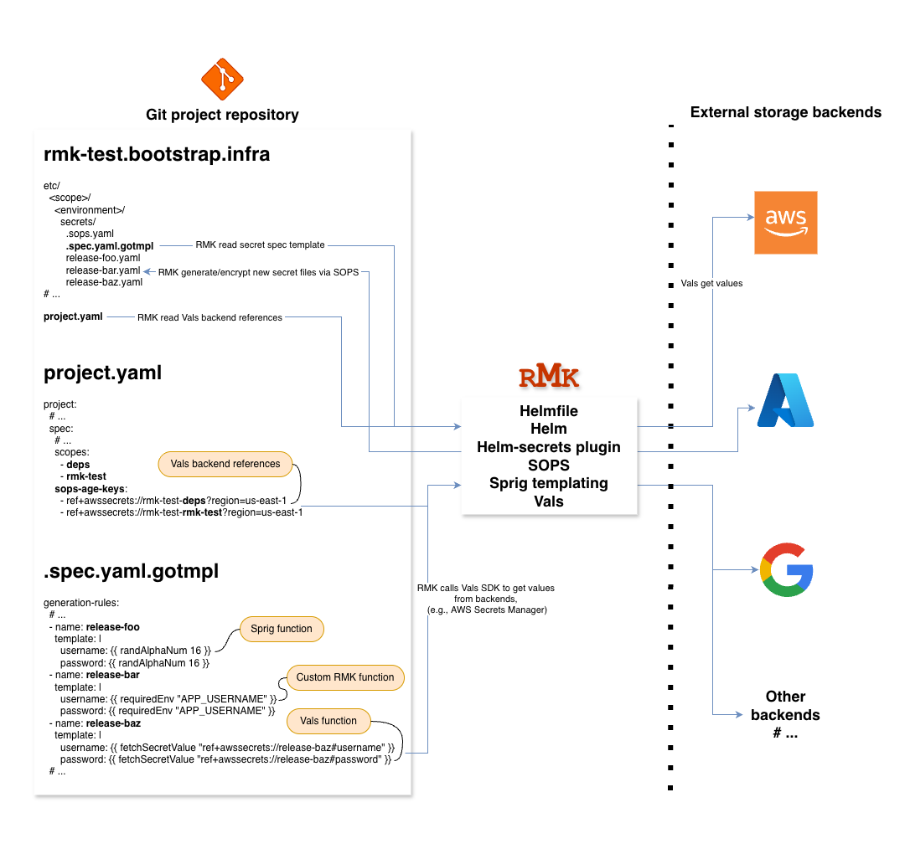

Integration with Helmfile Vals¶
Overview¶

Classic secrets management via Git, SOPS and Age¶
RMK utilizes SOPS and Age for secrets management. This provides a consistent and auditable mechanism for handling secrets.
RMK also promotes batch secrets management, an approach for generating and maintaining secrets in batch mode.
Key characteristics of the Git-based approach:
- Secrets are generated and encrypted using Golang templates and Sprig functions.
- Encrypted files are stored and versioned in Git.
- Encryption keys and secret rotation are managed by repository administrators or release managers.
- Operates per project, scope, and environment level.
This approach for secrets management remains the standard and manual method in RMK.
Alternative secrets management via Helmfile Vals and third-party backends¶
Introduction¶
Helmfile is used by RMK as its declarative release management layer
for Helm-based deployments.
It includes built-in integration with Vals, allowing configuration parameters
and secrets to be dynamically resolved from third-party backends during render time.
Popular Vals backends include:
- awssecrets – AWS Secrets Manager
- gcpsecrets – Google Secret Manager
- azurekeyvault – Azure Key Vault
- vault – HashiCorp Vault
- 1password – 1Password Connect
See Supported Backends for the full list.
This approach provides RMK with additional flexibility and extends its secrets management capabilities — particularly useful when customers or release managers choose to leverage existing third-party secrets management systems.
Basic usage with full Vals delegation¶
During Helmfile rendering via RMK, Vals recursively scans all
YAML structures
(maps, lists, scalar values) for strings that start with ref+. Each such value is resolved via the corresponding
backend provider (e.g., AWS Secrets Manager, Vault, SOPS).
If a ref+ reference is found inside a larger string, Vals does not process it — only standalone values are
supported.
Example:
releases:
- name: my-app
namespace: default
chart: ./chart
values:
- values.yaml
- secrets:
dbUser: ref+awssecrets://my-app#username
dbPassword: ref+awssecrets://my-app#password
# This line will NOT be resolved by Vals
dbUrl: "postgres://user:ref+awssecrets://my-app#password@db"
In this example:
- Helmfile automatically invokes Vals before rendering.
- Vals recursively replaces all standalone
ref+...strings with resolved values. - Inline references (like in
dbUrl) remain untouched and must be constructed inside Helm templates instead. - RMK orchestrates the Helmfile execution without intercepting or modifying the secret resolution process.
This mode provides full transparency and minimal coupling. RMK does not process or transform secrets itself, it instead delegates secret resolution entirely to Vals, relying on Vals backends for secret retrieval, access control, and rotation.
Batch secrets management with Vals integration¶
RMK extends its classic batch secrets management mechanism with the ability to fetch and resolve secrets
from third-party backends through Vals during template generation.
This allows users to automatically populate secret templates from systems such as AWS Secrets Manager, Google
Secret Manager, or Azure Key Vault, and then store the generated values locally in encrypted form via SOPS,
following the standard Git-based approach.
Secrets are retrieved in batch using the fetchSecretValue template function (equivalent to Helmfile’s
implementation).
After resolution, the resulting files are to be encrypted with SOPS and safely committed to Git — giving release
managers full control and auditability while still leveraging Vals backends for secret retrieval.
This approach is particularly useful when teams:
- prefer to maintain secrets in Git for visibility and versioning,
- want to avoid manual entry by pulling values automatically from third-party systems,
- may still keep
ref+values in templates for dynamic runtime resolution.
Example fetchSecretValue function usage¶
generation-rules:
- name: my-app
template: |
# Secrets fetched during generation via Vals
username: {{ fetchSecretValue "ref+awssecrets://my-app#username?region=us-east-1" }}
password: {{ fetchSecretValue "ref+awssecrets://my-app#password?region=us-east-1" }}
# Ref-style dynamic value — still delegated to Vals and resolved by it at Helmfile render time or release sync
apiToken: ref+awssecrets://my-app#token?region=us-east-1
When fetchSecretValue is used:
- RMK invokes Vals to resolve each referenced secret during template generation.
- Vals connects to the appropriate backend (e.g., AWS, GCP, Azure) using the credentials available in the environment.
- Each
ref+<vals_backend>://...reference points to a specific secret path and key within that backend. - Retrieved values are injected into the generated template prior to encryption.
After the template is rendered:
- RMK encrypts the generated secret files using SOPS, maintaining the Git-based workflow and audit history.
- Any remaining
ref+entries stay untouched and are dynamically resolved by Vals at render time during Helmfile execution.
This end-to-end flow ensures that secrets can be securely fetched, optionally stored in Git in encrypted form, and still benefit from runtime resolution for any remaining dynamic references.
Example secret structure in AWS Secrets Manager¶
Secret name: production/my-app/app
{
"username": "app-user",
"password": "app-pass"
}
Secret name: production/my-app/api
{
"credentials": {
"token": "abcd-1234-xyz"
}
}
Referenced in template:
username: '{{ fetchSecretValue "ref+awssecrets://my-app#username?region=us-east-1" }}'
password: '{{ fetchSecretValue "ref+awssecrets://my-app#password?region=us-east-1" }}'
apiToken: '{{ fetchSecretValue "ref+awssecrets://my-app#token?region=us-east-1" }}'
Required permissions¶
AWS SSM Parameter Store
ssm:GetParameterssm:GetParametersssm:GetParametersByPathkms:Decrypt(for SecureString parameters)
AWS Secrets Manager
secretsmanager:GetSecretValuesecretsmanager:DescribeSecretkms:Decrypt(if custom CMK is used)
Example IAM policy:
{
"Effect": "Allow",
"Action": [
"ssm:GetParameter",
"ssm:GetParameters",
"ssm:GetParametersByPath",
"secretsmanager:GetSecretValue",
"secretsmanager:DescribeSecret"
],
"Resource": [
"arn:aws:ssm:REGION:ACCOUNT_ID:parameter/PATH/*",
"arn:aws:secretsmanager:REGION:ACCOUNT_ID:secret:SECRET_PREFIX-*"
]
}
For encrypted secrets (KMS):
{
"Effect": "Allow",
"Action": [
"kms:Decrypt"
],
"Resource": "arn:aws:kms:REGION:ACCOUNT_ID:key/KEY_ID_OR_UUID"
}
Example secret structure in Google Secret Manager¶
Secret name: my-secret
Secret value: my-db-password-123
Referenced in template:
dbPassword: '{{ fetchSecretValue "ref+gcpsecrets://my-secret" }}'
Required permissions¶
Secret Manager
- Role:
roles/secretmanager.secretAccessor
gcloud projects add-iam-policy-binding PROJECT_ID \
--member="serviceAccount:SA_NAME@PROJECT_ID.iam.gserviceaccount.com" \
--role="roles/secretmanager.secretAccessor"
Cloud KMS (optional, if secrets encrypted with KMS)
- Role:
roles/cloudkms.cryptoKeyDecrypter
gcloud kms keys add-iam-policy-binding KEY_NAME \
--keyring=KEYRING_NAME --location=LOCATION \
--member="serviceAccount:SA_NAME@PROJECT_ID.iam.gserviceaccount.com" \
--role="roles/cloudkms.cryptoKeyDecrypter"
Example secret structure in Azure Key Vault¶
Secret name: my-app-api-key
Secret value: abc123xyz987
Referenced in template:
apiKey: '{{ fetchSecretValue "ref+azurekeyvault://my-keyvault/my-app-api-key" }}'
Required permissions¶
Minimum role: Key Vault Secrets User
AZURE_VAULT_NAME=my-vault
AZURE_PRINCIPAL_ID=<object_ID_of_service_principal_or_managed_identity>
AZURE_SCOPE=$(az keyvault show -n "${AZURE_VAULT_NAME}" --query id -o tsv)
az role assignment create \
--assignee-object-id "${AZURE_PRINCIPAL_ID}" \
--assignee-principal-type ServicePrincipal \
--role "Key Vault Secrets User" \
--scope "${AZURE_SCOPE}"
Automatic credential injection during template generation¶
RMK automatically passes active provider credentials into the context of template generation,
allowing seamless secret resolution from third-party backends (e.g., AWS Secrets Manager, Azure Key Vault, GCP
Secret Manager) without manual credential setup.
For details about all supported cluster providers and their configuration attributes, see
Configuration Management.
For example, when a cloud provider such as AWS, Azure, or GCP is initialized using:
rmk config init --cluster-provider aws
RMK stores the credentials for that provider and automatically injects them during
rmk secret manager generate, enabling Vals to access the respective backend transparently.
As a result, secret references such as ref+awssecrets://app#password are resolved automatically at
generation time — no environment configuration required.
Cross-provider access in a single secrets template¶
If you need to access secrets from an additional provider that differs from the active one,
export the required environment variables to pass the needed credentials to the template generator.
For example, when the currect cluster provider is AWS:
rmk config init --cluster-provider aws
But Azure and GCP are refenced additionaly from the same template, e.g.:
generation-rules:
- name: multi-provider-example
template: |
# AWS-provided secrets (default provider context)
database:
username: {{ fetchSecretValue "ref+awssecrets://my-app#username?region=us-east-1" }}
password: {{ fetchSecretValue "ref+awssecrets://my-app#password?region=us-east-1" }}
# GCP-provided secret (requires GOOGLE_APPLICATION_CREDENTIALS)
gcp:
apiKey: {{ fetchSecretValue "ref+gcpsecrets://my-api-key" }}
# Azure-provided secret (requires AZURE_CLIENT_ID, AZURE_CLIENT_SECRET, AZURE_TENANT_ID)
azure:
storageKey: {{ fetchSecretValue "ref+azurekeyvault://my-vault/storage-key" }}
# Optional dynamic Vals references still supported
metrics:
token: ref+vault://secret/data/observability#data.token
You should explicitly export the variables, e.g.:
# AWS variables will be exported automatically and always take priority over any exports
# Extra variables are required to be exported manually
export GOOGLE_APPLICATION_CREDENTIALS=/path/to/gcp-key.json
export AZURE_CLIENT_ID=<azure_client_id>
export AZURE_CLIENT_SECRET=<azure_client_secret>
export AZURE_TENANT_ID=<azure_tenant_id>
rmk secret manager generate --scope rmk-test --environment production
While the functionality is fully supported, it is considered advanced and should be used only when explicitly required.
SOPS Age key fetching via Vals backend references in project.yaml¶
Overview¶
RMK supports fetching SOPS Age keys via
Vals backend references defined in
project.yaml under
project.spec.sops-age-keys. Each entry corresponds to a project scope - the number of scopes
should equal the number of references.
This functionality is available for k3d and onprem cluster providers only, as they do not use any third-party secret storage out of the box.
Project generation example¶
rmk project generate \
--sops-age-key="ref+awssecrets://rmk-test-deps?region=us-east-1" \
--sops-age-key="ref+awssecrets://rmk-test-rmk-test?region=us-east-1" \
--environment="develop.root-domain=*.edenlab.dev" \
--owner=gh-user1 \
--scope=deps \
--scope=rmk-test
This command generates a RMK project structure with two scopes (
deps,rmk-test) and automatically links them to the corresponding SOPS Age keys stored in AWS Secrets Manager.
Example project.yaml¶
project:
dependencies:
- name: cluster-deps.bootstrap.infra
version: v0.16.0
url: git::https://github.com/edenlabllc/{{.Name}}.git?ref={{.Version}}
spec:
environments:
develop:
root-domain: '*.edenlab.dev'
owners:
- gh-user1
# Logical scopes representing individual project components
# Each scope will have its own secrets, releases, and structure
scopes:
- deps
- rmk-test
# SOPS Age keys defined as Vals backend references
# Each reference corresponds to one project scope
# In this example: keys are stored in AWS Secrets Manager (region: us-east-1)
sops-age-keys:
- ref+awssecrets://rmk-test-deps?region=us-east-1
- ref+awssecrets://rmk-test-rmk-test?region=us-east-1
Configuration initialization¶
When there are any Vals backend references in project.yaml, export credentials for the Vals backend defined in the
references (in this example — AWS) before initializing configuration, e.g. for AWS Secrets Manager:
export AWS_ACCESS_KEY_ID=<aws_access_key_id>
export AWS_SECRET_ACCESS_KEY=<aws_secret_access_key>
# Export AWS_REGION only if it is not specified in the Vals backend reference, e.g.:
# ref+awssecrets://rmk-test-deps?region=us-east-1
export AWS_REGION=<aws_region>
Then initialize configuration for the desired provider:
# For k3d cluster provider (default)
rmk config init
# For onprem cluster provider
rmk config init --cluster-provider=onprem
RMK automatically resolves the secrets at initialization time to securely fetch existing Age keys from the third-party Vals backends.